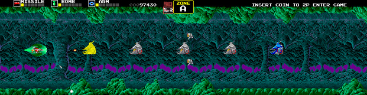

Darius II es un videojuego arcade de 1989 desarrollado por Taito. Es la secuela directa del Darius de 1987. Más tarde se lanzó como Sagaia en Japón en 1991 para Game Boy y ports no japoneses. Se lanzo una nueva version para PC Engine Super CD-ROM como Super Darius II en 1993.
Gran parte de la informacion aqui expuesta ha sido tomada de Wikipedia